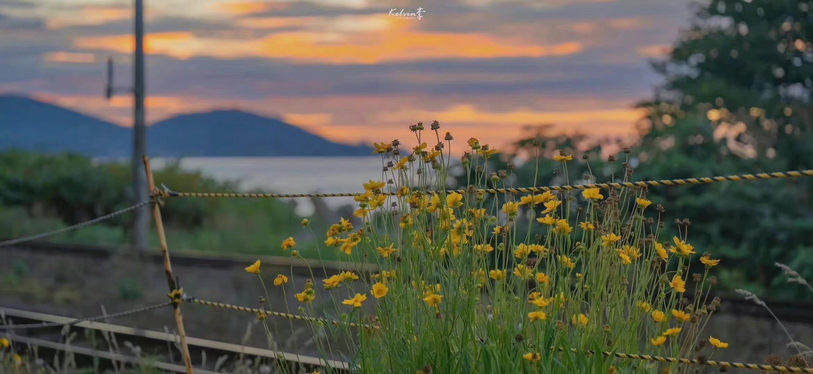

|
致一些被遗失了的自己。
|
岁月不居，时节如流。杨朔先生有言：“作为一个人，要是不经历过人世上的悲欢离合，不跟生活打过交手仗，就不可能懂得人生的意义。”成长过程蓦然回首间，我已经在人生这张宣纸上渲染了十八年。回望十多年来的成长历程，心中不免感慨万千。脑海中细数着过往数十几载的成长碎片，有时候醒觉生命是这般的奇妙与特别，自己也从一个咿呀学语的婴孩长大成人了。在跌宕中长大的我们或许有好多值得述说的故事，或美好、或苦涩、或孤独……
人生是一个过程，心理也是一个过程，随着心智的渐渐成熟，我越来越清晰地意识到我心理的变化。幼儿园，小学，初中，高中，到现在阶段的大学，将近十九个年头，我能感受到我每个阶段细腻的心路历程，我甚至总是在某个闲暇时不经意的回顾我所经历过的事件和心理活动。随着年岁的增长，也对曾困扰我日日夜夜的悲观情绪有了一些释怀……庆幸万分的是，现在的我，仍然乐观积极，温柔可爱，向往阳光，期待未来。
《月亮与六便士》中说“满地都是六便士，他却抬头看见了月亮”。热爱至极的梦想需要自己肆无忌惮的迫寻，保持热爱，你值得被爱。我无比感谢父母和师友一直以来对我的所有温柔，让我相信世界是精彩的、值得的。成长历程中经历的是喜也好，是悲也罢，能带给我进步、警醒的都是好的结果。把困难看的开点，活的潇洒自由才好。初中学会了和敏感的自己相遇，高中学会了懂事，大学学会了与自己独处，和孤独言和，一切的一切都是成长的印记，都带着岁月的划痕。

当下，对自己期望不高，只要不忘记自己的初心，坚定心中的理想就可以了，我的这一生前半段都在在意别人的看法，后半段及时止损，由我自己决定。生活还得前进，下个人生路口即将启航，惟愿自己继续慢慢长大，慢慢有所期待，慢慢成为更好的人。愿以后的我，仍然乐观积极，温柔可爱，向往阳光，期待未来。一分耕耘一分收获，用自己辛勤劳动的汗水洒于自身的人生历程的道路上，虽然是漫长，但我相信有付出总有回报。

——个人规划——
1.高分过六级
2.入团——>入党
3.搞好学习成绩
4.准备考研(进入理想的学校)
5.可以考一些有用的证书以及多参加一些竞赛……(还有实践活动等等不再赘述)
6.每年都争取拿奖学金(国励+校一等 已get,冲刺一下国家奖学金*—*)

——end——
|
| |
|
| |